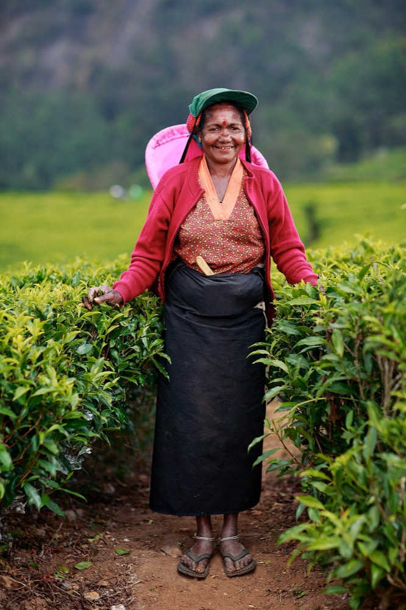

Шри-Ланка

Шри-Ланка — цейлонский чай, слоны и пляжи, уложенные в остров размером с область. Горная Шри-Ланка: поезд Канди—Элла идёт сквозь чайные плантации, девятиарочный мост Nine Arch Bridge встаёт из джунглей как каменное кружево, и все выходят фотографировать — и правильно делают. Хапутале и Нувара-Элия — плантации на высоте, где чай собирают вручную женщины-сборщицы, а дегустация на фабрике объясняет разницу между высокогорьем и долиной. Культура: скала Сигирия — дворец на монолит, подняться 1200 ступеней к утру, к фрескам «девам облаков»; храм зуба Будды в Канди — вечерняя церемония с барабанами. слоновий питомник Пиннавела и сафари в Яле — леопарды на деревьях, если повезёт. Пляжи: юг — Мира и Арун-бей с серф-школой дешевле европейской, Тринкомали — восток с спокойной водой. Кухня: рис и карри с десяти тарелок, хопперы на завтрак и чай с джагери (jaggery). Люди улыбаются легко — вы будете улыбаться чаще.
Что знать перед поездкой
- Поезд Канди—Элла — второй класс с открытыми окнами
- Сигирия — к утру, до жары
- Джаггери вместо сахара